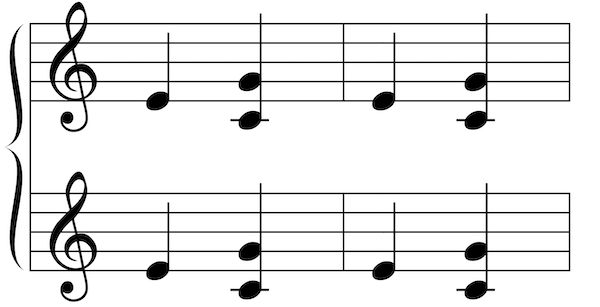
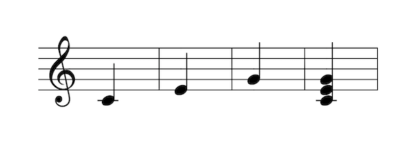
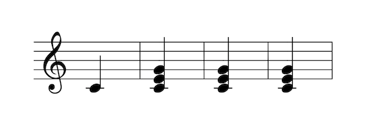

Score expressions
Score expressions allows to defines score objects (gmn or pianoroll) by dynamically combine various resources using a formal expression. To define such object one should use the basic set messages using a score expressions as arguments:
Example The following example defines a gmn and a pianoroll object using score expressions, the meaning of the expression is explained further.
/ITL/scene/score set gmn expr(seq [a] [b]);
/ITL/scene/pianoroll set pianoroll expr(score);
General Syntax
A score expression always starts with expr( and ends with ), then 2 syntaxes are handled:
- 1: Define an expression as an operation combining two scores. operator is the name of the operation used to combine them (see Section~operators for operators list), and score are the arguments passed to the operator (see Section~arguments for arguments specification).
- 2: Define on expression using a single score. This syntax is useful when defining an object as a dynamic copy of an other existing object or file.
Each of these tokens can, of course, be separated by spaces, tabulations or carriage returns (allowing multiline expression definition).
When defining an object using a score expressions, INScore will parse it, construct an internal representation and finally evaluate it, reducing the formal expressions to a valid GMN string.
Example Creating a guido object by sequencing two guido string
/ITL/scene/score set gmn expr( seq "[c d e]" "[f g h]");
is equivalent to
/ITL/scene/score set gmn "[c d e f g h]";
Score Operators
All the score operators of INScore make use of guido operators implemented in the GuidoAR library.
| operation | arguments | description |
|---|---|---|
| seq | puts the scores and in sequence | |
| par | puts the scores and in parallel | |
| rpar | puts the scores and in parallel, right aligned | |
| top | takes the first voices of where is voices count | |
| bottom | cut the first voices of where is voices count | |
| head | takes the head of up to duration | |
| evhead | takes the first events of where is the event's count of | |
| tail | cut the beginning of up to the duration of | |
| evtail | cut the first events of where is the event's count of | |
| transpose | transposes so its first note of its first voice match one | |
| duration | stretches to the duration of | |
| if not used carefully, this operator can output impossible to display rhythm | ||
| pitch | applies the pitches of to in a loop | |
| rhythm | applies the rhythm of to in a loop | |
Score Arguments
The syntax for arguments is quite permissive and various resources can be used as arguments for score expressions. In any case, when evaluating the expression, all the arguments will be reduce to GMN string so they can then be processed by the operators.
Arguments specification
\subsubsection{Arguments specification}
- GmnCode are not evaluated, passed as they are to operators. Both GMN and MusicXML string are supported.
- filepath: on evaluation INScore read all the content of the file. Again, both GMN and MusicXML are supported. filepath handle absolute or relative path (from the scene rootPath) as well as url.
- ScoreObject: Gmn code can be retreive from existing score objects (gmn or pianoroll) simply refering to them using their identifier (using absolute or relative path).
- EvaluableExpression: an expression can also be used as an argument, thus simple operator can be combined together to create more complex ones. In that case the expr token can be omitted: parenthesis are sufficient.
Arguments prefix
\subsubsection{Arguments prefix}
-
&: When triggering the reevaluation of an expression (see Section exprCmd) only the arguments prefixed with & are updated.
-
~: before the first evaluation of a score expression, any ScoreObjects prefixed with a ~ shall be replaced by their own expression. In other words, score expressions containing ~ arguments will be expended with existing score expressions. This mechanism allows to compose not only scores and score expressions together.
Example Defining /ITL/scene/score as a copy of /ITL/scene/simpleScore duplicated 4 times.
/ITL/scene/simpleScore set gmn "[e {c,g} |]";
/ITL/scene/score set gmn expr( &simpleScore );
/ITL/scene/score set gmn expr( seq ~ score ~ score);
/ITL/scene/score set gmn expr( par ~ score ~ score);
/ITL/scene/score should look like: 
Querying for the expanded expression of /ITL/scene/score (see Section~exprCmd) should return:
/ITL/scene/score expr
expr( par
( seq
&simpleScore
&simpleScore
)
( seq
&simpleScore
&simpleScore
)
)
Note: on arguments quoting Arguments using special characters (space, tabulation, parenthesis, braces...), should be simple or double quoted, otherwise quotes can be omitted.
'expr' commands
ITLObject defined using an evaluable expression gain access to these specific commands:
- get expr: return the expression used to define the object (before the expansion of ~ arguments).
-
get exprTree: return the expanded expression
-
expr reeval: re-evaluate the expression, updating only the value of arguments prefixed with &.
- expr reset: re-evaluate the expression, updating the value of all arguments.
- expr renew: reapply the definition of the object (similar to send its set message again)
Applied to an object which wasn't defined by an evaluable expression, all this commands will cause a bad argument error.
The renew command reset the internal state of the evaluated variable, forcing the re-evaluation and update of every arguments in the expression. Be aware that the track of copy evaluated arguments is lost after the first evaluation, thus renewing an expression defined using copy evaluated arguments won't update these arguments to their targeted ITLObject expression. Though, static arguments added by the copy shall be renewed.
newData event
newData is triggered by any object when its value change (generally because of a set message). Neither trying to set an object to its actual value without changing its type, nor re-evaluating an object to its actual value will trigger newData.
Of course, the newData event can be used together with reeval to automatically update an object when the value of an other changes.
Example Creating a copy of score, and automatise its update when score is changed
/ITL/scene/score set gmn "[c e]";
/ITL/scene/copy set gmn expr(&score);
/ITL/scene/score watch newData (/ITL/scene/copy expr reeval);
To avoid infinite loop when using recursion, newData event is delayed of one event loop, meaning that, in the previous example, during the event loop that follow score's modification, score and copy are different (copy has not been updated yet...).
Note: Because newData event is delayed, if score experiences multiple modifications during the same event loop (because multiple set messages have been sent together), only his final value will be accessible when newData will be actually triggered, however the event will be sent as many times as score have been modified.
Note: when automatizing update For the reasons raised in the previous note, one should be very careful to delayed update when automatise reeval with newData. Indeed, in some extreme case, executing a script one line after an other won't have the same result as executing the all script at once!!
Example Creating a "score buffer", storing every state adopted by score
/ITL/scene/score set gmn "[c]";
/ITL/scene/buffer set gmn "[]";
/ITL/scene/buffer set gmn expr(seq &buffer (seq "[|]" &score));
/ITL/scene/score watch newData (/ITL/scene/buffer expr reeval);
/ITL/scene/score set gmn "[e]";
/ITL/scene/score set gmn "[g]";
/ITL/scene/score set gmn "[{c,e,g}]";
Won't have the same result if run line by line, or the all script as once: Line by line: 
All script lines at once: 
To avoid such undeterministic behaviour, one should, in this case, manually trigger reeval after each modification of score.